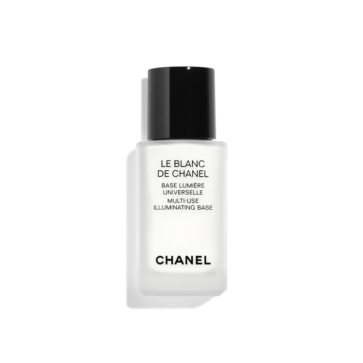
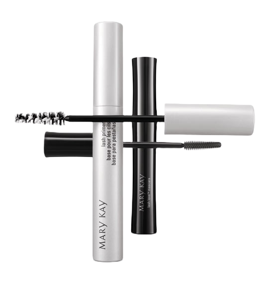
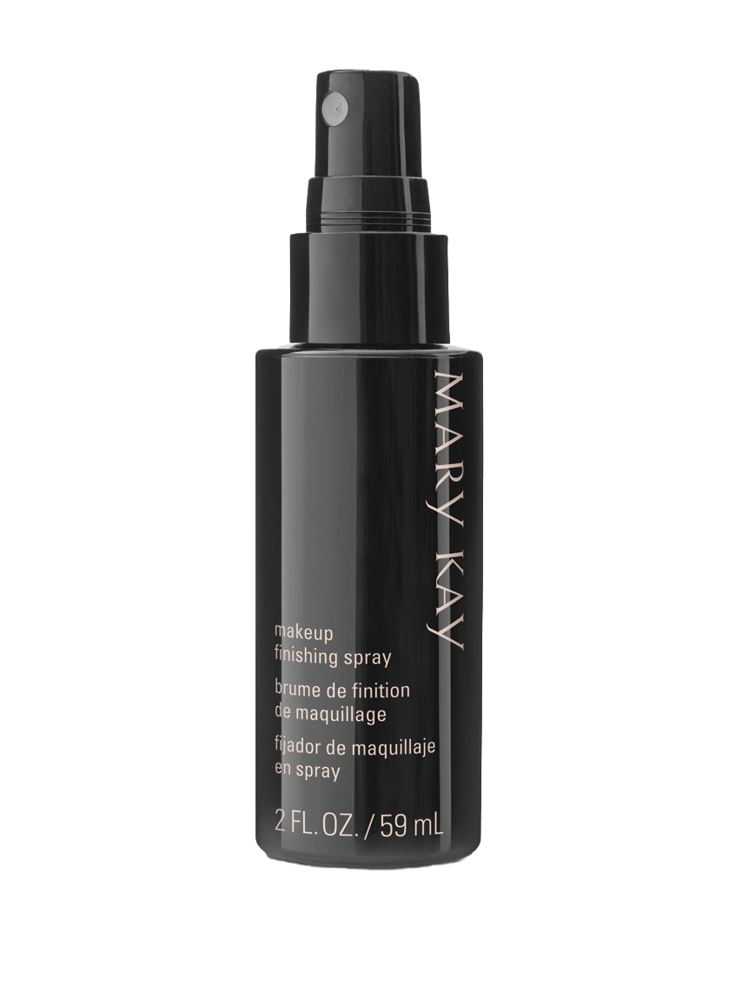

Porque tu belleza es lo mas importante de mi mundo
Make Up es un centro especializado en maquillaje localizado en san jose del cabo cuenta con un personal especializadp en la creacion de productos de esta indole.
Nuestros procesos de fabricación son sencillos y muy cuidados, llevados a cabo cumpliendo las directrices de un sistema de calidad riguroso.Cuidamos todo el proceso de fabricación de forma global, del principio al final, empezando por la selección de materias primas y proveedores hasta la calidad del producto terminado.
Realizamos lotes pequeños, por lo que los tiempos de almacenado son cortos, y de esta manera el producto llega al consumidor final lo más fresco posible.
¿Cuales son nuestros productos mas populares?
Base iluminadora

Se trata de un producto para aplicar antes del maquillaje que revitaliza la tez y ayuda a minimizar las posibles imperfecciones.
Base para pestañas y cejas

Permite lograr una fijación suave del producto sin que el acabado sea pegajoso. Incluye un aplicador especial con cerdas de distintas longitudes para peinar, fijar o definir las cejas.
Fijador del maquillaje

Este espray es un fijador con una duración de 16 horas que deja en el rostro una sensación agradable sin acartonamiento.